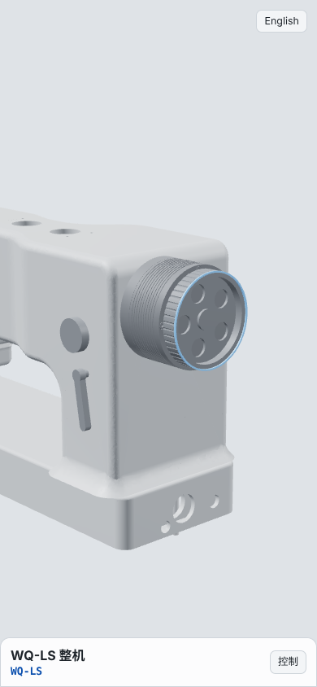

☰ 目录
WQ-LS 设计说明书
Design documentation (Chinese original)
三维整机 ↗
总览
G1 设计任务书与总体方案
设计任务书与总体方案（G1）
附图与附件
G2 动力学、强度与仿真
动力学、强度与仿真
附图与附件
G3 外观与机壳铸件
外观方案与机壳铸件（中期）
附图与附件
G4 零件与机构
G4.1 刺布与挑线机构
旋梭组：下轴、同步带、1 : 2 齿轮、旋梭轴、旋梭（G4.5，2026-11-11）
送布组：送布、抬牙、针距调节与倒缝、油泵（G4.6，2026-11-11）
压脚与操纵件：压脚、手抬和膝抬压脚、松线、夹线器、针距旋钮和倒缝扳手（G4.7，2026-11-12）
选配件：自动剪线 T、电子针距 E（G4.8，2026-11-13）
附图与附件
G5 机壳工艺
机壳铸造工艺（G5.1 第 1、2 步，2026-11-11）
机壳机加工工艺（G5.1 第 3–6 步；G5.2 改版，2026-11-11）
附图与附件
G6 网页三维整机
G6.1 网页三维整机“WQ-LS 整机”（第 138 轮，2026-11-13）
附图与附件
图（1）
G7 工程图与物料清单
工程图与物料清单（G7）
G8 整机补全与虚拟样机
G8.0 第 1 步：总体布置复查、刺布机构设计依据
G8.0 第 2 步：刺布机构依据与改动清单（待 Eddie 定）
虚拟样机：三维、装配、运动学、动力学、验证（方案，2026-11-16，施工前先定）
配合表（G8.1 第二步）
附图与附件
GC 控制器
平缝机控制器 CTRL-LS · 系统方案与选型（第 159 轮 159a）
上电调试步骤书：平缝机控制器 CTRL-LS 样板（A 版）
附图与附件
企业标准
Q/WQ 001—2026 缝纫机螺纹与螺钉
总览
› G6 网页三维整机 › 附图与附件
原文：
docs/设计/WQ-LS/G6/
G6 网页三维整机 · 附图与附件
#
G6/ 文件夹里文章正文没有直接引用的图、视频和文件，原样列出。
图（1）
#

手机.png
← 上一篇
G6.1 网页三维整机“WQ-LS 整机”（第 138 轮，2026-11-13）
下一篇 →
工程图与物料清单（G7）
↑